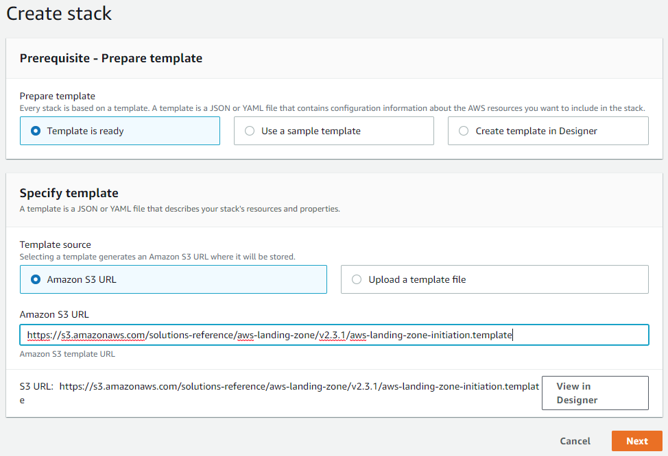

实施 AWS Landing Zone 3: 部署 Initiation Stack
本文将介绍 Landing Zone Initiation Stack 的部署, 参数解析以及一些容易出错的地方
创建 Initiation Stack
登入组织账号 (即这里的 yl-master), 进入 Cloudformation 服务. 创建一个新的 stack: 
template s3 url 使用 https://s3.amazonaws.com/solutions-reference/aws-landing-zone/v2.3.1/aws-landing-zone-initiation.template
Landing Zone Initiation stack 是一个比较庞大的 cloudformation template, 大约近 6000 行配置, 其核心部分是 5 个 Lambda 和 7 个 Step Functions. 但这还不是 Landing Zone 的全貌, 因为它引用了很多外部资源, 例如保存在 S3 里的 Lambda 函数实现. 在 Initiation stack template 中大部分内容 (约 2/3) 是 7 个 StateMachines (Step Functions) 的定义.
AWS 会对 Landing Zone 进行更新升级, 最新版本的信息可以从 https://aws.amazon.com/solutions/aws-landing-zone/ 获取
参数详解
Landing Zone Core Account Configuration
核心账号配置部分
- Shared Service Account Email Address: 填写现存共享服务账号的邮件地址. 如果你的现存环境中还没有共享服务账号也没关系, 如果有需要, Landing Zone 可以帮你创建
- Log Archive Account Email Address: 填写现存的日志账号邮件地址. 同上
- Security Account Email Address: 填写现存的安全审计账号的邮件地址. 同上
- Nest OU Name Delimiter: Colon (:) 使用冒号作为 OU 路径的界定符. 保持默认即可
- Core OU Name: vopsdev-landing-zone:core 根据上一篇文章中的 OU 规划来填写, 这里是核心账号所在的 OU
- Non Core OU Names: vopsdev-landing-zone:production,vopsdev-landing-zone:department,vopsdev-landing-zone:staging,vopsdev-landing-zone:sandbox 根据上一篇文章中的 OU 规划来写, 这里是非核心账号所在的 OU. 使用逗号作为分隔符
- Security Alert Email Address: 接受安全告警邮件的地址. 具体是来自 GuardDuty Finding, Cloudwatch Alarm, Config Rules Compliance Status Change 的消息
- Lock StackSetsExecution Role: Yes. 是否锁定角色 AWSCloudFormationStackSetExecutionRole. Landing Zone 通过 Stackset 来部署资源基线到各个受控账号, 因此会在各个账号下创建角色 AWSCloudFormationStackSetExecutionRole 来执行 stack instance. 该角色具有账户的管理员权限. 锁定该角色的含义是只允许特定的实体 (principal) 来承担 (assume role).
- Subscribe All Change Events Email To Topic: No. 是否订阅所有的配置变更事件. 按需设置
- All Change Events Email: 接受配置变更事件通知的邮件地址
Landing Zone Pipeline Configuration
流水线配置部分
- Pipeline Approval Stage: Yes. 给 Landing Zone 配置流水线添加手动批准的步骤
- Pipeline Approval Email Address: 批准 Landing Zone 配置流水线的邮件地址
- Auto Build Landing Zone: No. 是否在 initiation stack 创建完成后立刻启动配置流水线. 我们需要对配置进行定制, 因此这里一定需要设置为 No
Shared Services VPC Configuration
共享服务的 VPC 配置部分
- Shared Services VPC Options: Shared-Services-Network-3-AZs. 选择共享服务账号的 VPC 类型. 仅仅用来生成初始配置. 并不会在 Initiation 阶段创建实际的资源. 后面可以按自己的需要修改初始配置
- Shared Services VPC CIDR: 100.65.0.0/16 共享服务 VPC 的网段. 同上
VPC Flow Logs Retention Policy
VPC Flow Logs 的留存策略
- VPC Flow Logs Retention In Days: 90
AWS Security and Configuration Services
安全和配置管理部分
- Enable AWS Security and Configuraiton Monitoring in: All regions 在哪些区域启用安全和配置管理服务 (GuardDuty, Config 之类). 同样也仅仅用于生成初始化配置. 后期可以按需要修改
AWS Config Rules
启用哪些 AWS Config Rules. 按默认都启用即可
Add-On Publisher Configuraiton
Add-On 产品更新配置部分
- AWS Manages Service Catalog Add-On Portfolio? Manual Updates 手动管理 Add-On Portfolio 的版本更新
- Add-On Update Notification Email: Add-On 更新通知的邮件地址. 按需设置
关于通知邮件地址
结论
不同的 AWS 账号需要不同的邮件地址, 这基本不会出错. 但是在部署 Landing Zone Initiation stack 时需要注意 Security Account Email Address 的邮件地址不能用来接收 Security Alert. 即 Security Alert Email Address 和 Security Account Email Address 不能是同一个.
原因
Initiaton stack 中有这样的资源定义
1 | LandingZoneConfigDeployer: |
而 Lambda 函数 LandingZoneDeploymentLambda 的 config_deployer.py 中会检查 email_list 中是否有重复地址 1
2
3
4
5
6
7
8
9
10
11
12
13
14
15
16
17
18...
def unique_email_validator(email_list):
result = set([x for x in email_list if email_list.count(x) > 1])
duplicate_list = list(result)
logger.info("Duplicate Emails: {}".format(duplicate_list))
if not duplicate_list:
logger.info("Duplicate emails not found")
else:
raise Exception("Found duplicate email(s) {} in the parameters.".format(duplicate_list))
...
def config_deployer(event):
try:
s3 = S3(logger)
...
# Check if the emails are Unique
unique_email_validator(event.get('email_list'))